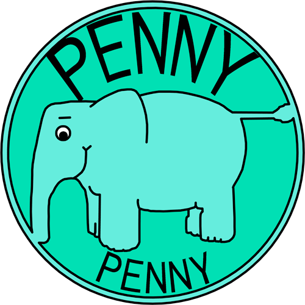
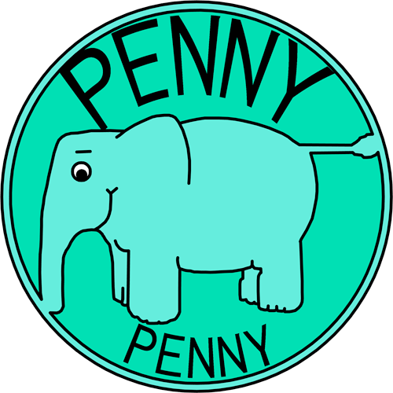

Continuous Delivery
Jenkins in the Real World
Gianluca Arbezzano
Software Engineer at CurrencyFair
OpenSource maintainer


 

We don't
Istall a new Jenkins server
We don't
understand how works a specific plugin
We don't
learn how put your symfony application under CI
In first because we work with ZF
but you don't care about it! We will be agnostic
About the ecosystem
- ~40 employee
- 5 teams
Our stack
- 3 PHP applications and different libraries
- 1 Java application and different libraries
- Other different repositories
Developers are great people but they have some problem of focus